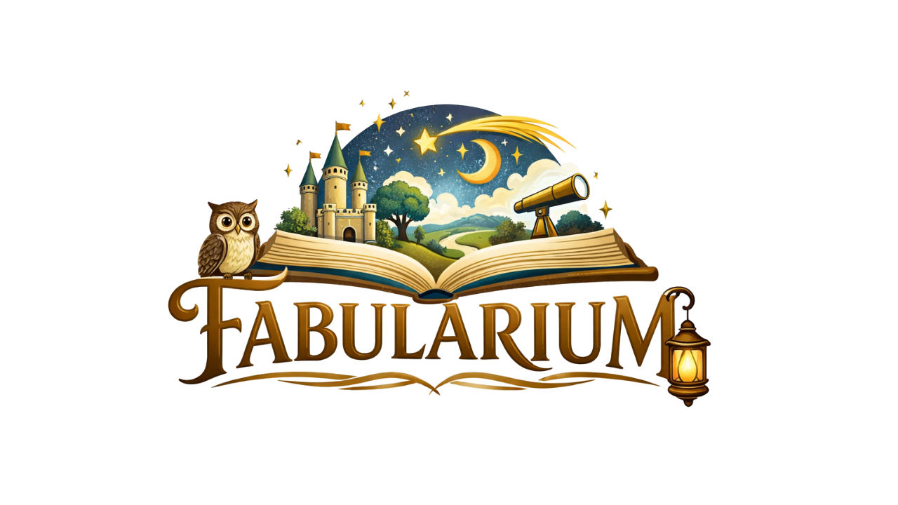

Biblioteca de Histórias, Ciência e Imaginação
Espaço dedicado à criação e preservação de histórias narradas especialmente para Rafael.
Mais do que um simples conjunto de audiobooks, este projeto foi criado para unir
imaginação, afeto e conhecimento, oferecendo experiências que estimulam
a curiosidade, a criatividade e o desenvolvimento intelectual durante a infância.
Aqui, cada história é pensada como uma oportunidade de aprendizado e descoberta —
sempre acompanhada pelas vozes familiares que fazem parte da vida de Rafael.
A proposta é construir, ao longo do tempo, uma verdadeira biblioteca de narrativas
que possam ajudá-lo a compreender o mundo, desenvolver valores humanos e cultivar
a curiosidade científica.
| Nome | Tipo | Síntese |
|---|---|---|
| Dossiê Calendário 2026 | Dossiê | Leitura integrada da estratégia de intervenção Calendário 2026. |
| Dossiê Férias 2025-2026 | Dossiê | Leitura integrada do período das férias de fim de ano (2025/2026). |
| Plano Programático 2026 | Plano Programático | Diretrizes, metas e cronograma estratégico para as atividades semestrais 2026.1. |
| Relatório de Alerta 2025.01 | Relatório de Alerta | Análise situacional e indicadores críticos relacionados ao aniversário do primo Rafael. |
| Relatório de Trigger 2025.01 | Relatório de Trigger | Apoio para consulta psiquiátrica. |